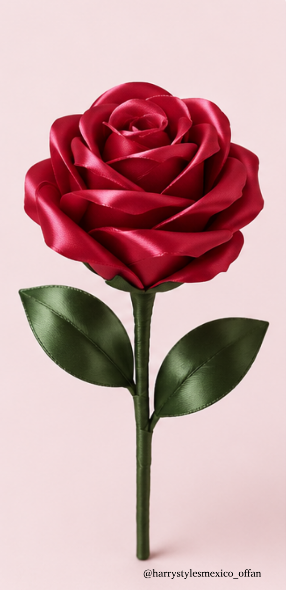
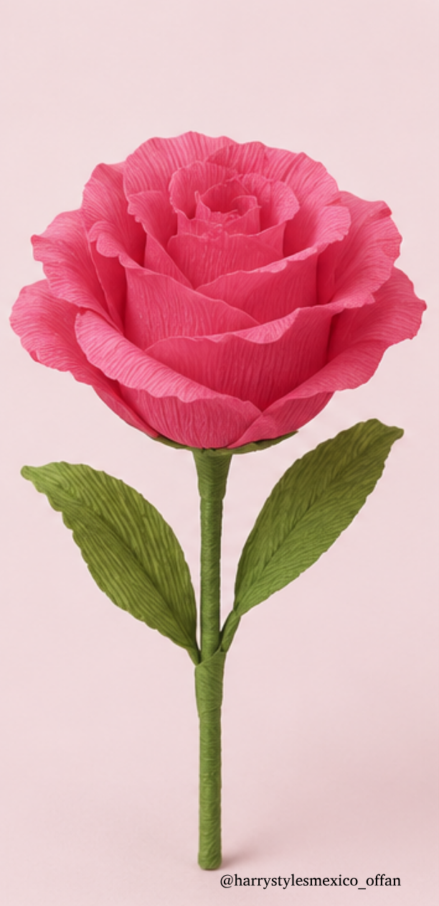
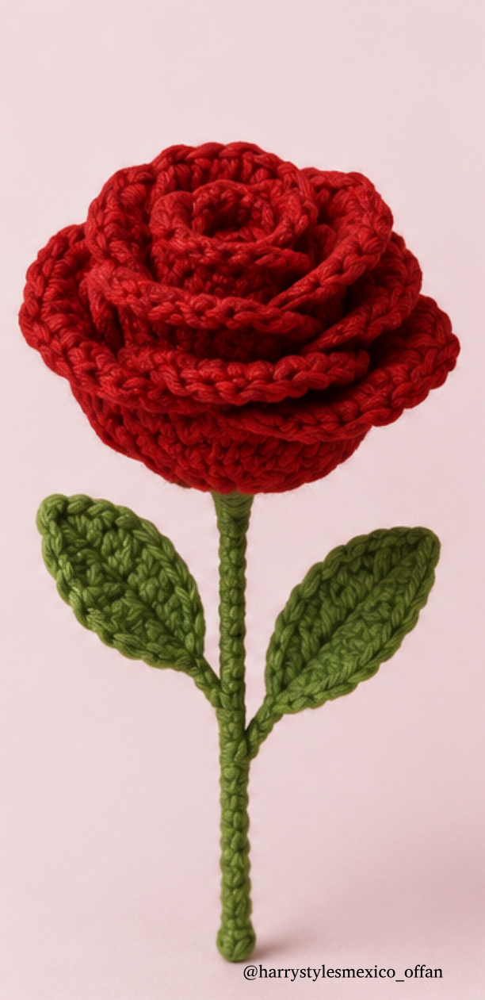
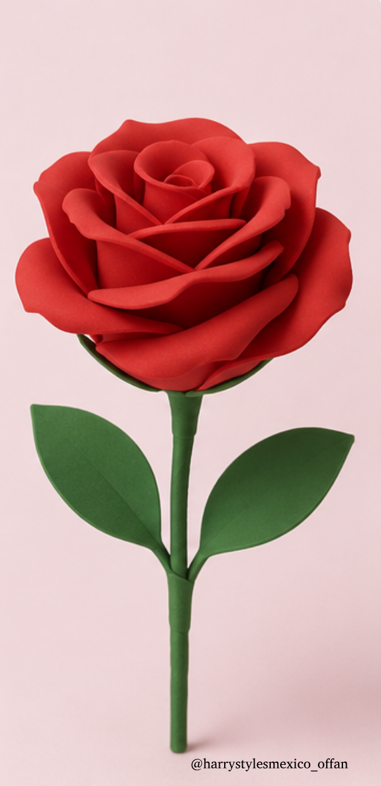

OPCIÓN 01
Rosa de listón
Una alternativa artesanal que puedes elaborar con listón en tonos rosa o rojo.
Ver tutorial ↓FAN PROJECT 2026
Guía oficial para participar durante las fechas de Harry Styles en México.
Ver instrucciones ↓¿CÓMO PARTICIPAR?
Lleva el papelito del color asignado a tu sección y colócalo frente al flash de tu celular durante Coming Up Roses, siguiendo el momento indicado para tu zona.
Ver guía exprésCOLORES POR ZONA
Las zonas numeradas deben ubicarse según su nombre general.
Ver guía de coloresROSAS
Para participar en Coming Up Roses, recomendamos llevar una rosa artesanal.
RECOMENDACIONES PARA TU ROSA
Procura que tu rosa sea ligera y fácil de transportar, evitando materiales rígidos, puntiagudos o elementos que puedan representar un inconveniente durante los filtros de seguridad.
Recomendamos evitar las rosas naturales, ya que podrían ser retiradas durante los filtros de acceso.
Importante: El ingreso de cualquier objeto está sujeto a los lineamientos del evento y a la revisión del personal de seguridad del recinto. Actualizaremos esta información si se publican indicaciones específicas para los conciertos.
¿QUÉ ROSA PUEDO LLEVAR?
Estas son algunas opciones propuestas para participar en Coming Up Roses.

Una alternativa artesanal que puedes elaborar con listón en tonos rosa o rojo.
Ver tutorial ↓
Una alternativa artesanal y accesible que puedes preparar en casa.
Ver tutorial ↓
Una opción hecha a mano que además puede conservarse como recuerdo.
Ver tutorial ↓
Una alternativa ligera y resistente que también puedes elaborar en casa.
Ver tutorial ↓PLANTILLA
La plantilla de Coming Up Roses contiene los diseños correspondientes a las distintas zonas.
Abrir plantillaVIDEO DE EJEMPLO
Mira el ejemplo antes del concierto para saber cómo participar durante la canción.
¿NECESITAS AYUDA?
Si tienes dudas sobre materiales, colores o tu zona, consulta la información oficial de tu representante.
Buscar representante